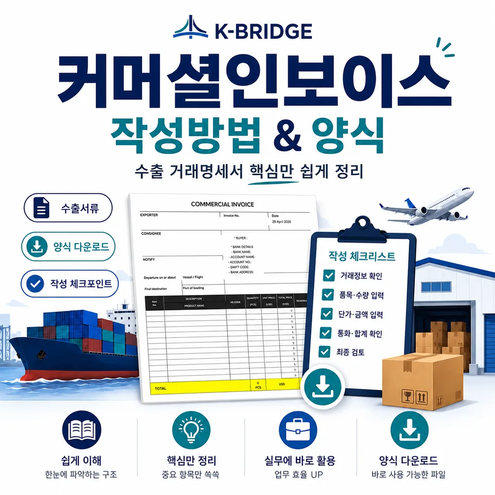
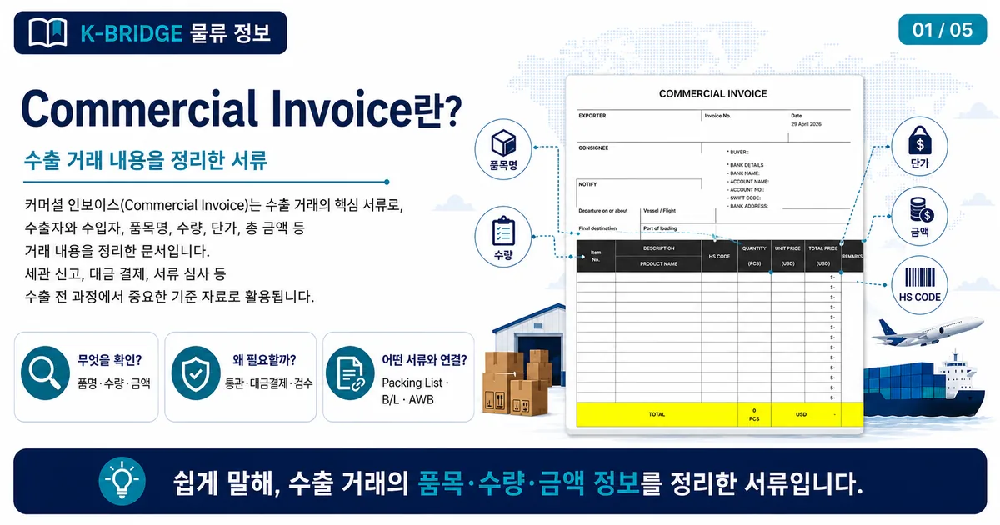
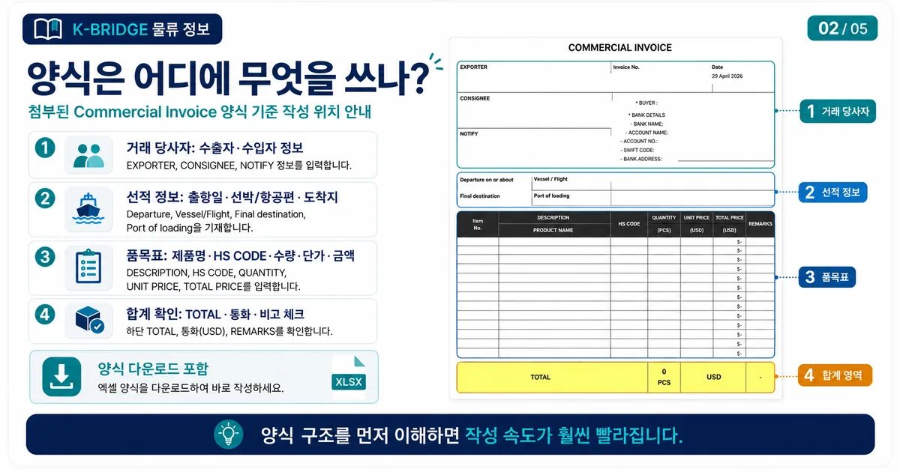
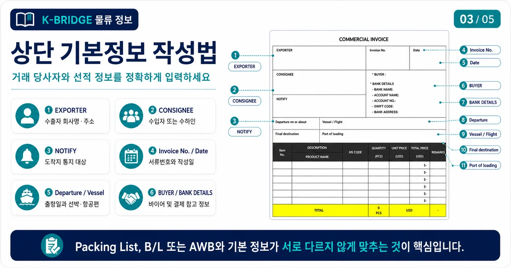
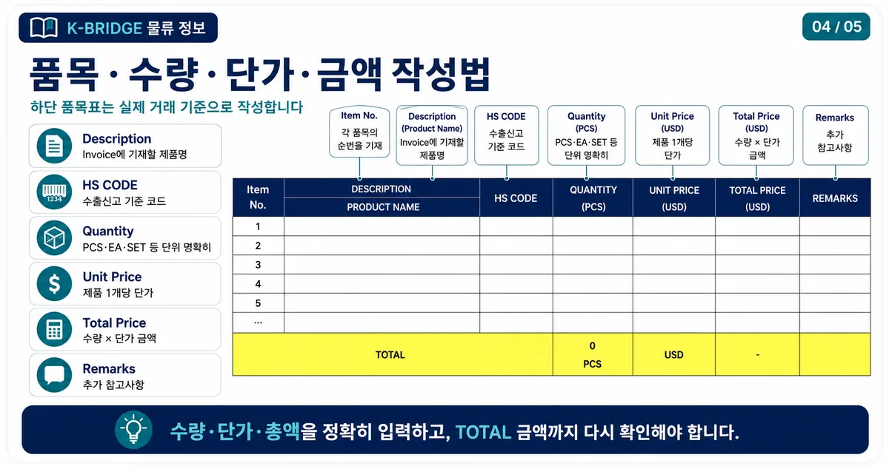
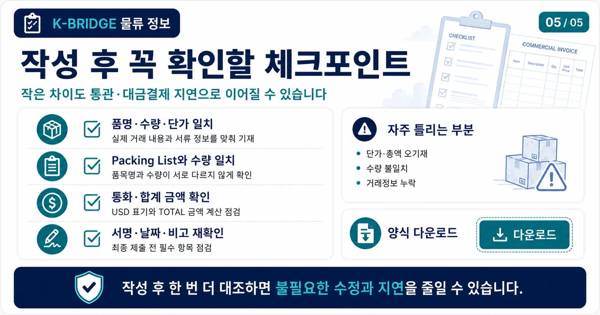

핵심 요약
Commercial Invoice는 수출자가 바이어에게 발행하는 수출 거래명세서이자 상업송장입니다. Packing List가 포장 수량과 중량을 설명한다면, Commercial Invoice는 품목명, 수량, 단가, 총액, 통화, 결제조건 등 거래 금액 정보를 정리합니다.
Commercial Invoice란?
커머셜 인보이스는 수출자가 수입자에게 발행하는 상업송장입니다. 실제 거래되는 품목, 수량, 단가, 총액, 결제조건, 운송조건을 정리해 수출신고와 도착지 통관, 대금 결제의 기준 자료로 사용합니다.

세관과 바이어는 이 서류를 보고 물품 가격과 거래 조건을 확인합니다. 따라서 커머셜 인보이스의 금액, 통화, 품목명, 수량이 다른 서류와 다르면 통관 지연이나 정정 요청이 발생할 수 있습니다.
커머셜 인보이스 양식 다운로드
아래 파일은 첨부된 COMMERCIAL INVOICE 양식을 기준으로 포함한 다운로드용 엑셀 파일입니다. 수출자, 수입자, 송장 정보, 선적 정보, 품목별 수량·단가·총액을 순서대로 입력할 수 있도록 구성되어 있습니다.
KBRIDGE Commercial Invoice 양식
파일 형식: XLSX · 구성: INVOICE 시트 · 사용 목적: 수출 상업송장 작성

양식은 회사·품목·거래 조건에 따라 수정해서 사용할 수 있습니다. 단, 바이어가 별도 양식을 지정했거나 신용장·특정 국가 통관 요건이 있는 경우에는 요청 양식을 우선 확인하는 것이 좋습니다.
작성 전 준비사항
커머셜 인보이스를 작성하기 전에는 거래 금액과 조건을 먼저 확정해야 합니다. 실제 수출신고와 바이어 결제에 연결되는 서류이므로 예상 금액이나 임의 통화로 먼저 작성하지 않는 것이 좋습니다.
- 수출자와 수입자의 정확한 회사명, 주소, 담당자 정보를 준비합니다.
- Invoice No., 작성일, Buyer 정보, Bank Details를 확인합니다.
- 제품명, HS CODE, 수량, 단위, 단가, 통화를 정리합니다.
- Unit Price와 Total Price가 수량 기준으로 맞는지 확인합니다.
- 선적항, 도착지, 인코텀즈 조건, 결제 조건을 Packing List, B/L 또는 AWB와 맞춥니다.
상단 기본정보 작성법
첨부 양식의 상단 영역은 거래 당사자, 송장번호, 작성일, 바이어 및 은행 정보, 선적 기본정보를 적는 부분입니다. 이 정보는 Packing List, B/L 또는 AWB와 함께 확인되므로 서로 다르게 작성하지 않도록 주의해야 합니다.

품목·수량·금액 작성법
커머셜 인보이스에서 가장 중요한 부분은 하단 품목표입니다. 실제 거래 기준으로 품목명, HS CODE, 수량, 단가, 총액, 비고를 작성해야 하며, 전체 합계가 맞는지 확인해야 합니다.

| 항목 | 작성 방법 |
|---|---|
| Item No.순번 | 품목이 여러 개인 경우 1, 2, 3 순서로 구분합니다. |
| Description제품명 | Packing List와 같은 제품명을 사용합니다. 모델명이나 규격이 중요하면 함께 적습니다. |
| HS CODE품목분류 | 수출신고와 목적지 통관 기준이 되므로 품목에 맞는 코드를 확인합니다. |
| Quantity수량 | PCS, SET, EA 등 단위를 명확하게 적습니다. |
| Unit Price단가 | 품목 1개 또는 1단위당 가격을 입력합니다. 통화 기준을 함께 확인합니다. |
| Total Price총액 | 수량 × 단가 기준 금액입니다. 하단 TOTAL 금액과 일치해야 합니다. |
| Remarks비고 | 모델, 원산지, 추가 조건 등 필요한 참고사항을 입력합니다. |
자주 틀리는 부분
커머셜 인보이스는 보기에는 단순한 서류지만, 금액과 조건이 포함되어 있어 작은 오기입도 확인 요청으로 이어질 수 있습니다. 아래 항목은 작성 후 반드시 한 번 더 확인해야 합니다.

- Unit Price와 Total Price 계산이 맞는지 확인해야 합니다. 수량이 바뀌면 총액도 함께 수정해야 합니다.
- USD, EUR, KRW 등 통화 표시가 누락되지 않도록 확인합니다.
- Packing List와 Commercial Invoice의 품명, 수량, HS CODE가 다르면 수출신고나 도착지 통관에서 확인 요청이 발생할 수 있습니다.
- 인코텀즈 조건과 결제 조건이 계약서 또는 바이어 요청사항과 다르지 않은지 확인합니다.
- Buyer, Bank Name, Account No., Swift Code 등 결제 정보는 오탈자 없이 입력해야 합니다.
자주 묻는 질문
Q. Commercial Invoice와 Packing List는 같은 서류인가요?
Q. 커머셜 인보이스는 꼭 영어로 작성해야 하나요?
Q. 단가와 총액은 어떤 통화로 써야 하나요?
Q. 양식의 Bank Details에는 무엇을 쓰나요?
수출서류가 헷갈린다면 케이브릿지와 먼저 확인하세요
제품 정보, 거래 금액, 포장 수량, 목적지만 정리되어도 수출서류와 운송 흐름을 빠르게 검토할 수 있습니다. 해상, 항공, 해외특송, 샘플 발송, 기업 수출 물류까지 필요한 방식으로 상담해드립니다.